There are several options for the Quickmarks.
| 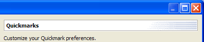 |
| 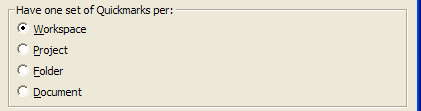 |
| 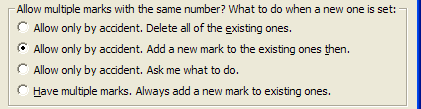 |
| 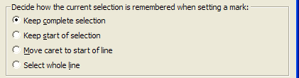 |
| 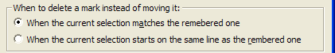 |
| 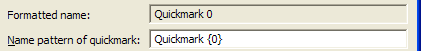 |
| 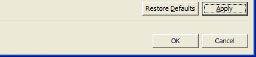 |
Instead of having one set of Quickmarks per Workspace (default) you might prefer to have one set per Project, per Folder or even per Document. With scope Workspace or Project the set of Quickmarks spreads over the whole scope tree including any subfolders. A Quickmark is found (and potentially moved) even if it is present deep inside some folder hierarchy (by recursively looking for it). With scope Document there is no recursion naturally.
With the Folder setting your scope is more limited than you might expect: only Quickmarks existing in direct child documents of the current folder are considered as belonging to the set. If the search for Quickmarks would recurse into subfolders here too then you would end up with an inconsistency: as soon as you would jump to a Quickmark inside some subfolder document the scope would change silently to that subfolder, even if you started near the top. One consequence would be, that setting a Quickmark in some top folder would potentially remove multiple Quickmarks in several subfolder documents, whereas setting a Quickmark deep in the hierarchy would ignore any same numbered Quickmark in sibling or parent folders.
Besides, changing the scope setting does not delete any existing Quickmarks. The task and bookmarks view continue to show them all and you can thus navigate to all existing ones via the views. But the keyboard navigation will only look for Quickmarks in the choosen scope, derived from the active editor.
Note that widening the scope e.g. from Document to Workspace may leave you with multiple Quickmarks having the same number. See next option for details on how this plugin deals with duplicate Quickmarks.
With no editor open at all and a scope narrower than workspace, there is no indication which target scope to use. If you try to jump to a duplicate Quickmark then, the plugin falls back to choose the very first Quickmark from the workspace with that number. After an editor is opened, the target to use is determined from the active editor and jumping is restricted to that project, folder or document. Better you open some document in the scope of interest and then jump. Unique Quickmarks in the workspace on the other hand are found easily and the target scope then is known correctly.
As told for the previous option you might have multiple Quickmarks with the same number when you widen the scope. Another situation with multiple Quickmarks may arise even with the default Workspace scope when you close a project with Quickmarks set in some documents of that project.
Closing a project does not remove the Quickmarks, but makes them inaccessible the same way as all resources of that project, as long as the project remains closed. Task view and Bookmarks view don't show the marks of the closed project either, the same way as they don't show other annotations of closed projects.
When you now set new Quickmarks somewhere else, then reopen the closed project again, you may get duplicates too.
If you get duplicates this way or by widening the scope (both considered to exist by accident) what to do, when setting a new one with the same number somewhere else? You have the choice of removing all of the existing duplicates when you set a new one.
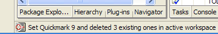
Or you can let the plugin handle this case specially by adding another dup for already duplicated marks instead, so that you not loose accidentally several important positions, potentially spread all over the place (default).
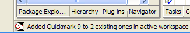
Another option is to let the plugin ask, what to do with existing duplicates. Here you can additionally cancel the set Quickmark action by pressing the cancel button or ESC on the keyboard.
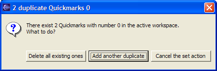
Finally you may prefer to have multiple Quickmarks with the same number regularily and work with dups all the time, deleting them only explicitely. An extreme case of this would be to turn the plugin from 'B company Style' into 'M company Style'. See How to switch styles.
This plugin handles moving to duplicates by cycling through them. From the current selection the next Quickmark with the wanted number is jumped to, toggling around to the first one, when the selection is on or after the last mark. The order of jumping respects the project, path and file name alphabetically and the remembered selection start and length inside the document numerically. For Quickmark 0 there is also an action available to jump to the previous mark, see the menu. An appropriate message is shown in the statusline.
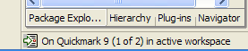
The Quickmarks remember the current selection completely by default. You may prefer to let the mark only remember the start of the selection, move the cursor to start of line or highlight the whole line where the current selection starts. Note, that even with the latter three options the selction remains unchanged when setting the mark. Only when you jump to a mark your preference will be visible.
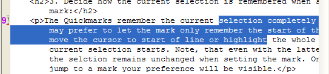
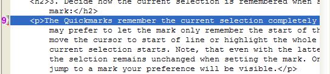
Note also, that the current caret position is ignored. The mark is set where the current selection starts from top. No way around this: Eclipse does not offer an API to get/set the caret position programmatically (as far as I could figure).
By default a Quickmark is removed if the current selection matches the remembered selection exactly and you then press the key to set a new one with the same number. This holds true even if you have opted to never move / always add a Quickmark with the same number. This is easily achieved by jumping to a Quickmark, which changes the current selection to the remebered one, then invoking the action to set/delete that mark. This works always.
If the current selection differs even slightly this will be interpreted as a move request (and in case you have opted to never move a Quickmark possibly an add request, leaving you with multiple Quickmarks with the same number on the same line).
But you might prefer to relax this policy so that every selection starting at the same line as an existing Quickmark is enough to being interpreted as a delete request.
Note, that it is always possible to have several Quickmarks with different numbers starting at the same line. This may make perfect sense when the marks remember the whole or the start of selection. It seems pretty useless with the selection remebered to start of line or whole line. But it might at least be usefull to switch mark numbers. The overlapping icons to the left of the editor try to indicate the fact by beeing partly transparent. Look for the small red mark, it has a different position for every mark number. If you see more than one red mark there is more then one Quickmark set on that line.
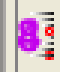
The name of a Quickmark is shown by default in task and bookmarks view in the Description column and also when you hover over the Quickmark decorations left and right to the editor (in most editors).
The Quickmarks are by default named "Quickmark {0}", where "{0}" is dynamically replaced with the number of the Quickmark (a digit 0-9). You may change the name of a Quickmark here.
The upper field just shows a formatted name sample and isn't editable.
The string entered in the lower field is a full blown MessageFormat pattern supplied with 12 parameters:
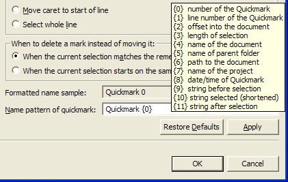
If you feel stressed already then skip the details, the default is OK!
As indicated all parameters are copied into the generated name as of the time when the Quickmark is set, they are never updated later automatically. If you want the Quickmark name to be updated after heavy changes to a document (e.g. renaming the document, moving the document to another folder, deleting or inserting many lines before the mark) you must recreate the Quickmark, best done by jumping to it, then pressing the key to delete/set that same mark twice.
With no duplicate Quickmarks the default setting is usually informative enaugh. But when you prefer to work with duplicate Quickmarks often, the additional parameters might come in handy.
Overwhelmed? Skip the samples.
If, for instance, you regularily close the projects, you are currently
not working on (not deleting the Quickmarks in it before closing,
naturally), then you might prefer to pattern the Quickmarks like
"Mark {0} in {7}", which yields names like
"Mark 5 in org.sourceforge.eclipsetools".
Especially if you switch to M company style,
then the number of the Quickmark will never change (always be 0),
depending on your choosen scope you then might like something similar
to
"Quickmark set at line {1}"
or
"Mark in ''{4}'' ({1})", the latter
yielding
"Mark in 'readme.txt' (42)".
If you prefer, you can have the Quickmark show part of the current
selection. E.g. the pattern
"Mark {2} ''{9}|{10}|{11}''" will give you
"Mark 333 'before |the selection| and after'",
if you have something selected, or
"Mark 333 'before ||and after'" otherwise.
The {2} here is the offset into the document of the
selection (resolved to 333 in the sample), sometimes a better
distinguisher than the line number.{9}, {10} and
{11} are replaced with the strings yust before, inside and just
after the current selection.
The "''" (two
consecutive single quotes) are resolved to just one single quote.
And the "|" (vertical bar) stands for itself here.
Do you feel uncomfortable now, finally? DON'T PANIC!
The date/time parameter can be formatted to show only one, date or time,
or both. Pattern
"{8}" alone shows as
"07.16.04 06:07pm", pattern
"{8,date}" gives
"07.16.2004" and
"{8,time}" yields
"06:12:44pm".
You can also append a format style after "date" or
"time". The styles are "short",
"medium", "long" or "full". E.g.
"{8,date,long}" yields
"July 16, 2004".
You even can use the more exotic features of MessageFormat,
e.g.
"Mark {0} ({3,choice,0#caret|0<selection [{3} chars]})"
will yield something like
"Mark 0 (selection [13 chars])" or
"Mark 0 (caret)" depending on wether you had
some chars selected when setting the mark or not.
Just for completeness a really exotic pattern is this sample:
"Mark {0} ({3,choice,0#{9}'|'{11}|0<{9}'|'{10}'|'{11}|5<{10}})".
This will yield 3 different Quickmark names, depending on how many chars
where selected when setting the mark:
"Mark 0 (before |and after)" with no chars selected,
"Mark 0 (before |this| and after)" with 1-5 chars selected and
"Mark 0 (the selection)" with more than 5 chars selected.
See the JavaDoc of java.text.MessageFormat
and java.text.ChoiceFormat
for the gory details of formatting messages.
To guide you while typing the pattern in the lower field, the upper
sample field shows the formatted mark name corresponding to your
pattern as if you were setting a Quickmark 0 at line 42 in an imaginary
document org.eclipse.example/src/doc/readme.txt where
org.eclipse.example is the project name. The imaginary
selection is at character offset 333, has an imaginary length of 13 and
the before/inside/after text is
"before /the selection/ and
after".
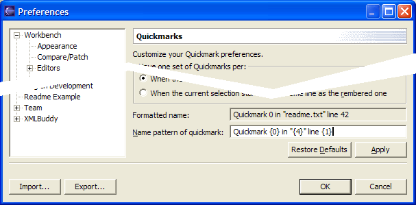
If you enter invalid patterns the problem is shown and the buttons 'Apply' and 'OK' are disabled until the pattern is valid again. The most often reason for an invalid pattern is the unaware usage of single quotes and unmatched curly braces. If in doubt then stick with the simple usage of parameters in the form {#} and use double quotes instead of single quotes.
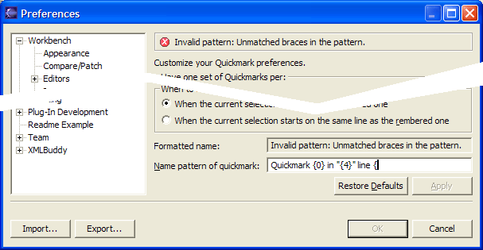
Remeber that you may rename a Quickmark via some of the views. This will NOT change the Quickmark into a normal mark, it remains to be a Quickmark and is still considered as a candidate for jumping and beeing automatically deleted as any other Quickmark.
So, don't add important comments via any view for a Quickmark! Consider adding a normal bookmark or a task at that location instead.
See: